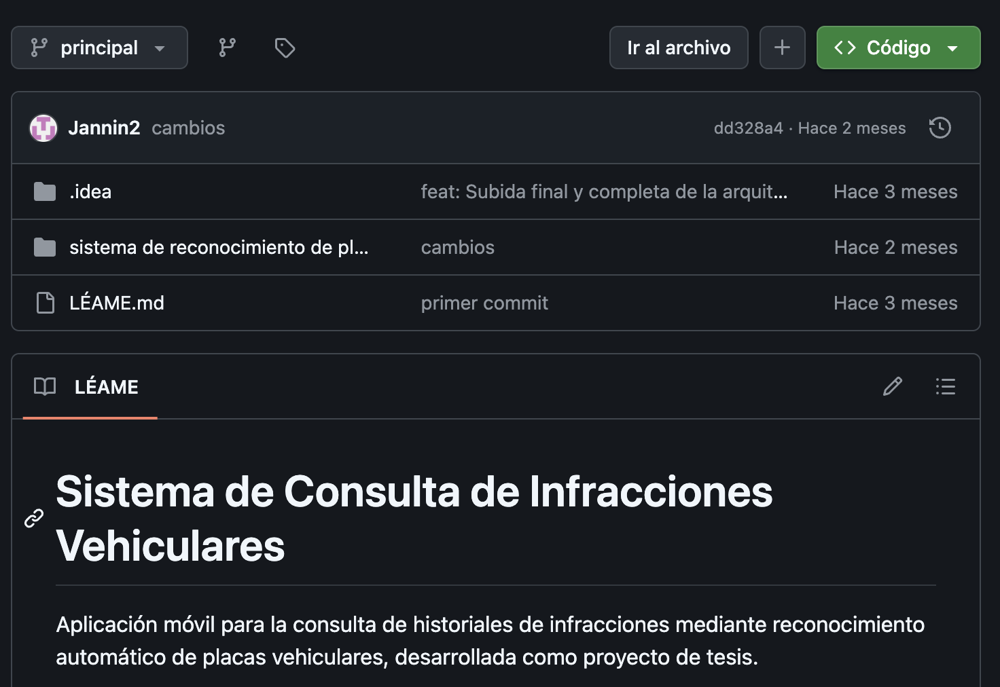
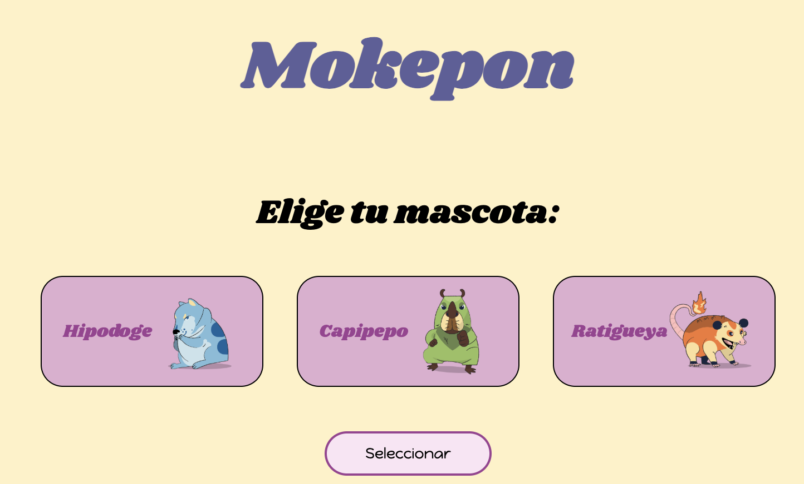
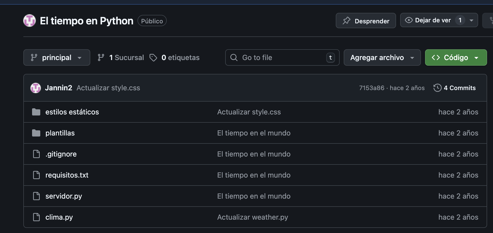
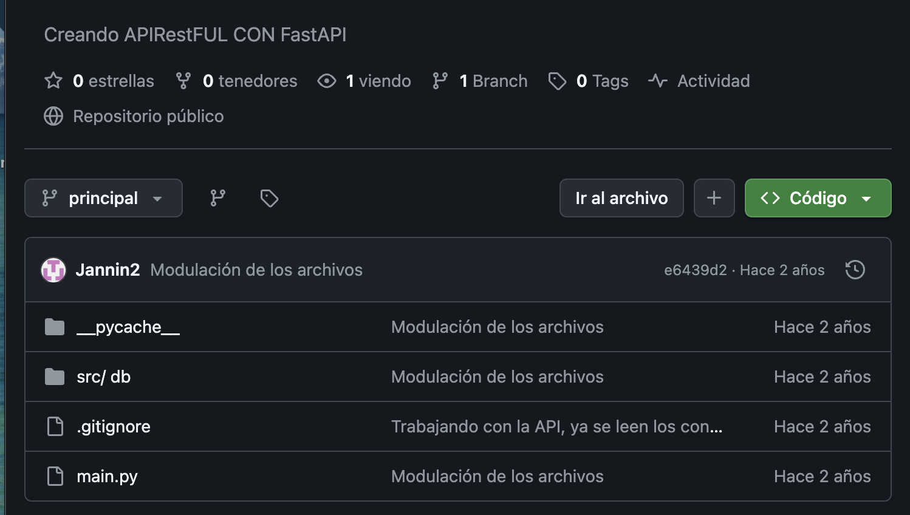
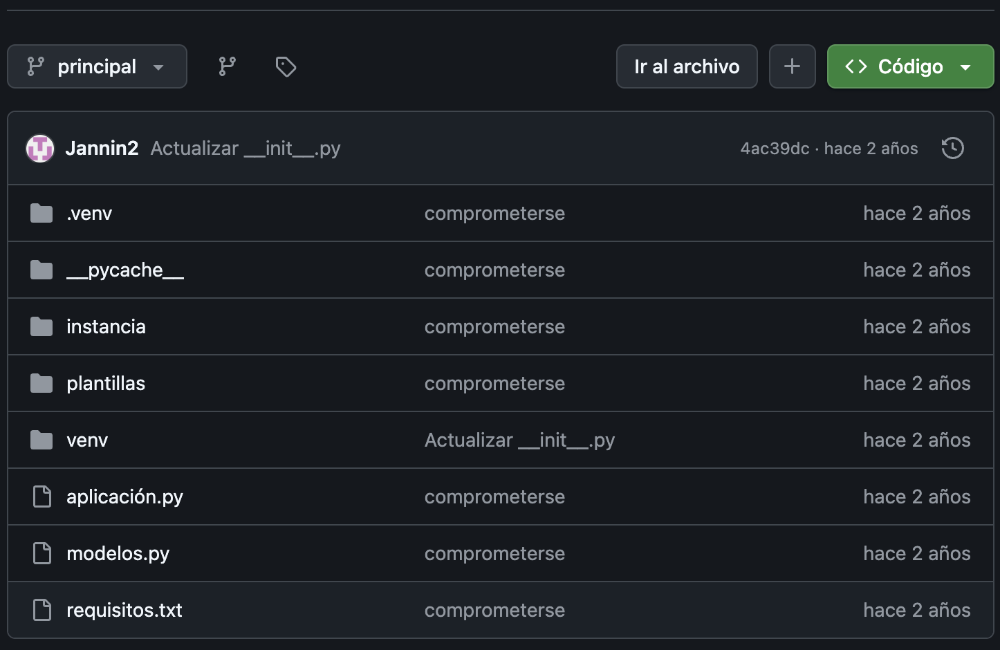

Proyectos seleccionados enfocados en backend, APIs y procesamiento de datos

Sistema que detecta matrículas en imágenes en menos de 10 segundos usando OCR y visión por computadora. Optimizado para condiciones de baja iluminación.
Ver Codigo
Backend en tiempo real para juego multijugador con soporte para +20 jugadores concurrentes usando WebSockets.
Ver Proyecto
API backend que consume datos en tiempo real y permite consultar el clima por ciudad con validación de entradas.
Ver Codigo
Desarrollé una API RESTful de alto rendimiento utilizando FastAPI, enfocándome en la creación de un sistema escalable y fácil de mantener.
Ver Codigo
Solución backend integral diseñada para la administración eficiente de stock y productos. Implementé una lógica de negocio robusta que automatiza el control de existencias, permitiendo un seguimiento preciso de los activos de una organización.
Ver CodigoExplora más proyectos y código en mi GitHub